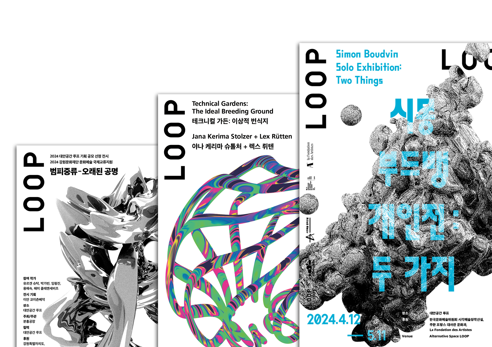
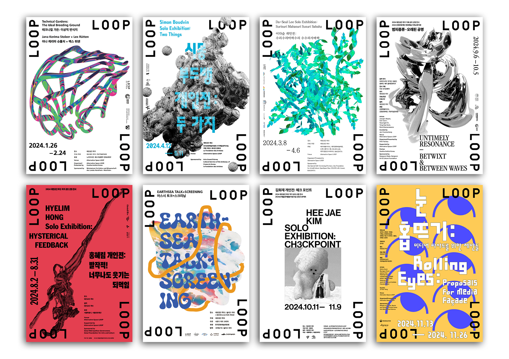
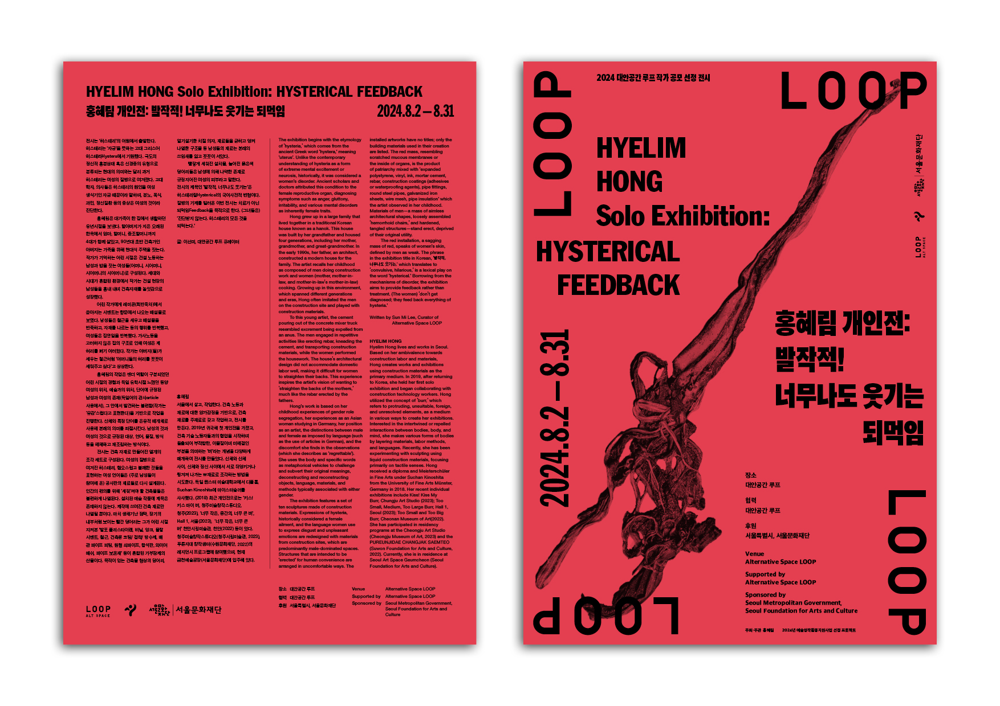
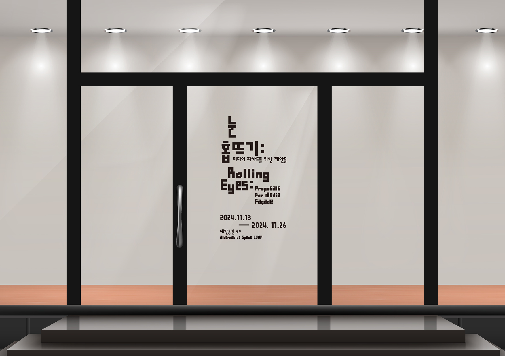

한국 동시대 미술의 주요 실험 공간, 대안공간 루프의 2024년 전시 그래픽 디자인.
국내외 작가들의 개인전·단체전을 위한 포스터, 리플렛, DM 등 전시 인쇄물 전반을 담당했다. 각 전시의 작가적 세계를 충실히 담으면서도, 루프 특유의 비판적이고 실험적인 예술 철학이 시각 언어로 일관되게 반영될 수 있도록 설계했다.
벌미중류·오채된 공경, 이상적인 번식지, 시몬 부드뱅 개인전 등 각기 다른 작가와 주제에 맞춰 독립적인 그래픽 언어를 구성하면서도 루프의 정체성 안에 귀속시켰다.


